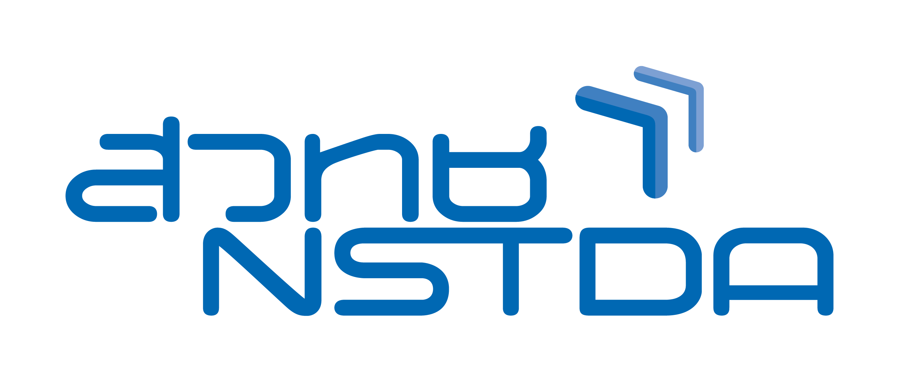
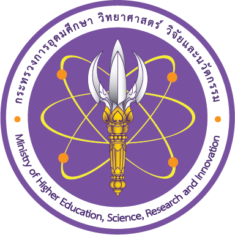
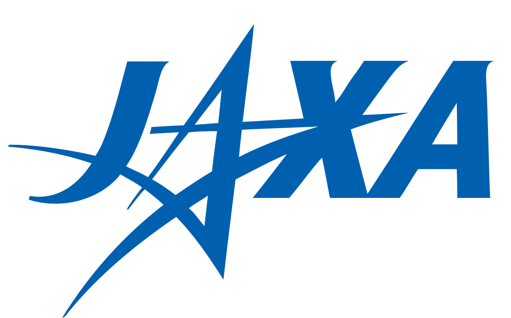
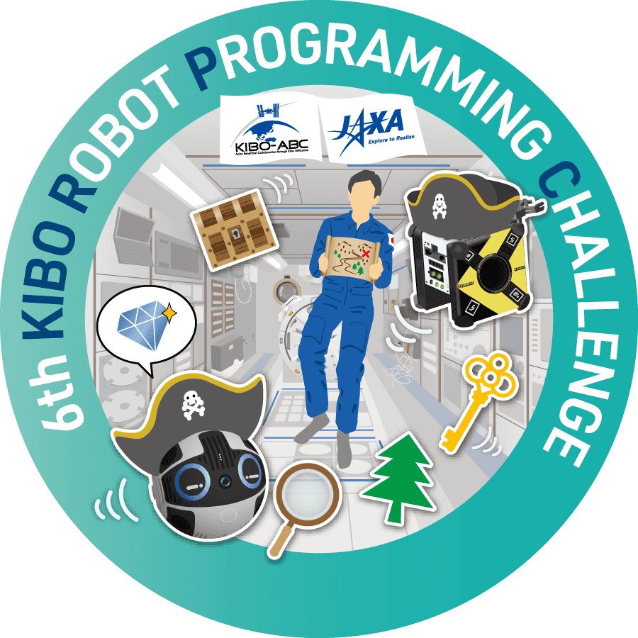
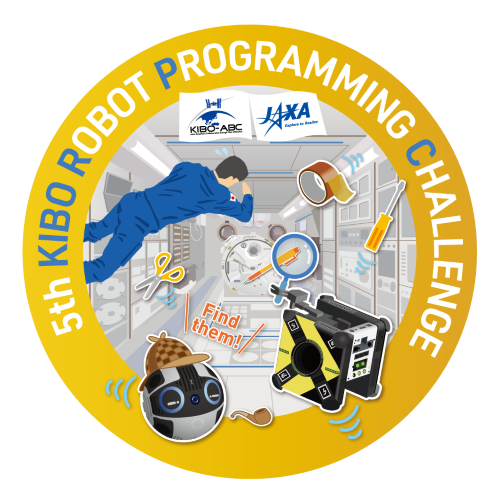
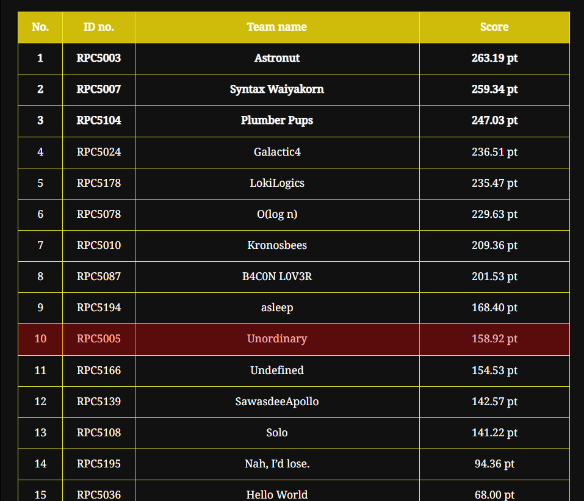
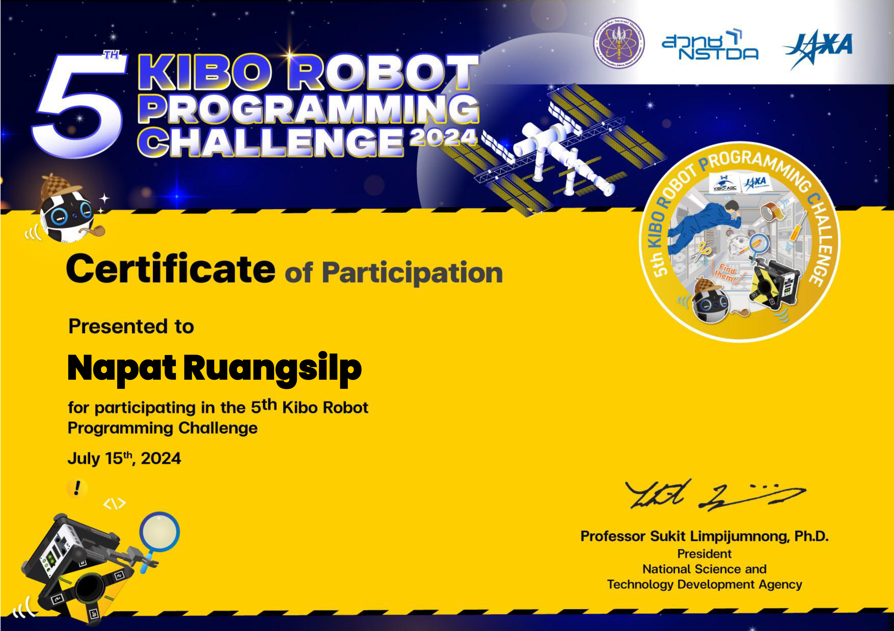
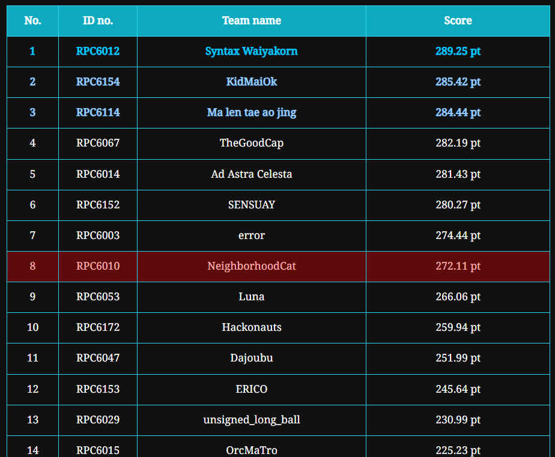
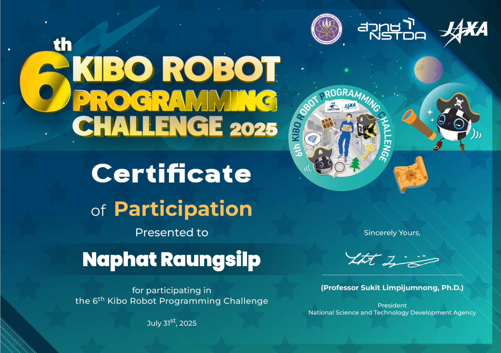
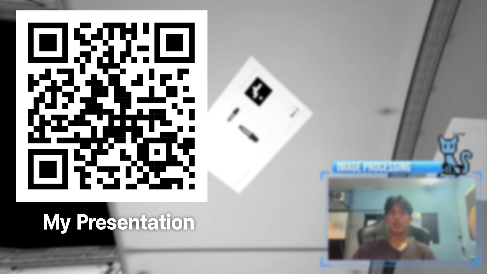

Kibo Robot Programming Challenge
    สำนักงานพัฒนาวิทยาศาสตร์และเทคโนโลยีแห่งชาติ (สวทช.) ร่วมกับองค์การสำรวจอวกาศญี่ปุ่น (JAXA) จัดโครงการแข่งขัน The 6th Kibo Robot Programming Challenge เพื่อค้นหาทีมชนะเลิศเป็นตัวแทนเยาวชนไทยเข้าร่วมการแข่งขันรอบชิงแชมป์นานาชาติ ในเดือนพฤศจิกายน 2568 ณ ศูนย์อวกาศสึคุบะ ประเทศญี่ปุ่น โดยผู้เข้าร่วมแข่งขันจะต้องเขียนโปรแกรมด้วยภาษา JAVA ควบคุมหุ่นยนต์แอสโตรบี (Astrobee) บนสถานีอวกาศนานาชาติ (ISS) ตามภารกิจที่ได้รับมอบหมายโครงการนี้เป็นความร่วมมือระหว่าง สวทช. กับหน่วยงานพันธมิตร ได้แก่ สำนักงานพัฒนาเทคโนโลยีอวกาศและภูมิสารสนเทศ (องค์การมหาชน) และ สถาบันเทคโนโลยีอวกาศนานาชาติเพื่อการพัฒนาเศรษฐกิจ (สทอศ.) ในการจัดการแข่งขันภายในประเทศ
The 5th Kibo Robot Programming Challenge ปี 2024
อธิบายภารกิจ
อธิบายภารกิจเราจะต้องเขียนโค้ดด้วยภาษา Java เพื่อควบคุมหุ่นยนต์ในยานบินอวกาศ โดยในยานจะมีรูปภาพที่เป็นรูปอุปกรณ์ต่างๆ ซึ่งภารกิจเราจะต้องให้หุ่นของเราไปถ่ายภาพของทุกชิ้นบนยานและไปรายงานกับนักบินแล้วหุ่นเราจะต้องไปหาของที่นักบินบอกแล้วส่งสัญญาณบอกนักบิน แต่ในยานจะมีโซนสีแดงเราจะต้องทำให้หุ่นเราไม่โดนโซนสีแดงด้วย
ได้อันดับที่ 10 ของประเทศ
ชื่อทีม UNORDINARY
จำนวนสมาชิก 4 คน(ต่างสถาบัน)
ความประทับใจ impression
การแข่งขัน Kibo Robot ในปี 2024 เป็นการแข่งขันครั้งแรกของพวกผม พวกผมนั้นมาจากต่างสถาบัน โดยทำงานผ่านทาง Discord พวกเราวางแผนการทำงานและแบ่งหน้าที่กัน ส่วนผมได้รับหน้าที่ในการจัดการเรื่องเส้นทางการเดิน (Path) และการหมุน (Rotation Quaternion) และช่วยเสริมเพื่อนๆ ด้านอื่นๆ โปรเจกต์นี้มีความท้าทายเป็นอย่างมาก เนื่องจาก Kibo Robot นั้น ผู้เข้าแข่งขันส่วนใหญ่อยู่ในระดับมหาวิทยาลัย แต่พวกผมยังอยู่ในระดับมัธยมกัน แต่พวกผมก็สามารถคว้าอันดับที่ 10 มาได้
The 6th Kibo Robot Programming Challenge ปี 2025
อธิบายภารกิจ
ภารกิจรอบนี้จะเป็นการเขียน Java ควบคุมหุ่นยนต์เพื่อไปหาของที่อยู่ในยานอวกาศและไปรายงานให้กับนักบิน แล้วนักบินจะบอกให้เราไปหาของชิ้นนั้นแล้วส่งสัญญาณให้นักบินรู้ แต่ Kibo Robot ปี 2025 นั้นจะมี Oasis Zone เพิ่มเข้ามา โดยจะเป็นพิกัด 3 มิติ ซึ่งถ้าเราอยู่ในโซนนี้จะทำให้เราได้คะแนนเพิ่มขึ้นจากเดิม
ได้อันดับที่ 8 ของประเทศ
ชื่อทีม NeighborhoodCat
จำนวนสมาชิก 4 คน(ต่างสถาบัน)
ความประทับใจ impression
Kibo Robot ปี 2025 นั้นเป็นการแข่งขันครั้งที่ 2 ของพวกผม พวกผมได้หวังว่ารอบนี้จะต้องได้อันดับที่ดีขึ้น รอบนี้เราแบ่งหน้าที่กันเหมือนเดิม มีฝ่าย AI ฝ่าย OpenCV ฝ่าย Rotation and Path และฝ่าย Oasis Zone ผมได้มีหน้าที่ดูแลการหมุนของหุ่นและเส้นทาง และหา Path ที่ทำให้ได้คะแนน Oasis Zone มากที่สุด รอบนี้ทุกอย่างไปได้ดี แต่ก็ยังติดปัญหาหลายอย่างเพราะภารกิจที่ยากขึ้นต้องใช้ AI ที่แม่นยำ พวกเราเลยมาช่วยกัน Train AI รอบนี้พวกเราก็ต้องแข่งกับระดับมหาวิทยาลัยเหมือนกับรอบก่อน ๆ แต่ทีมพวกเราก็ยังสามารถคว้าอันดับที่ 8 ของประเทศมาได้
 โปรแกรม Software